Landscape design
Garden layouts, plant palettes, paths, edges, and focal areas planned around your space and budget.
Limuru Road, Nairobi
Premium garden design, installation, plant sourcing, and landscape care for homes, estates, hospitality spaces, and commercial grounds.
Ready to upgrade a garden, entrance, lawn, or commercial frontage?
What they do
Crystal Gardens helps clients choose the right plants, shape the outdoor experience, and keep gardens looking cared for after installation.
Garden layouts, plant palettes, paths, edges, and focal areas planned around your space and budget.
Hands-on planting, beds, lawns, borders, and finishing details for new and refreshed outdoor spaces.
Quality plants selected for the right light, soil, maintenance level, and Nairobi growing conditions.
Routine trimming, cleanup, lawn attention, seasonal refreshes, and ongoing care for finished gardens.
Premium kerb appeal for gates, patios, office fronts, restaurant entries, and reception landscapes.
Neat, professional outdoor areas for offices, compounds, hospitality properties, and shared spaces.
Why clients trust them
Their public reviews point to the things that matter when hiring a landscaper: clear advice, delivered plants matching what was promised, reasonable pricing, and tidy work.
"A reputable company known for many years with no questionable credentials."
Samwel Wanyama"The quality we were shown is the quality we got. They advise as to what plants thrive where."
Isaac Abrahamson"My garden was well done and the price was reasonable. You can't go wrong with those guys."
Caroli ShivachiActual project work
A selection of completed Crystal Gardens work: entrance beds, residential planting, timber planter screens, nursery stock, lawn recovery, and ornamental garden details.
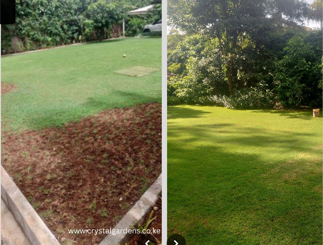
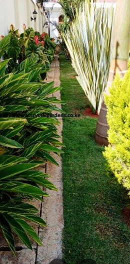
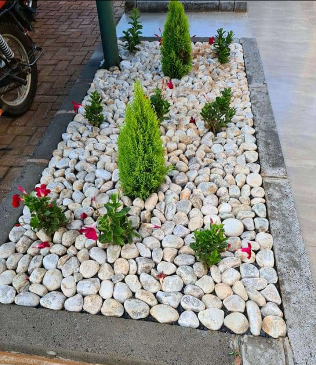
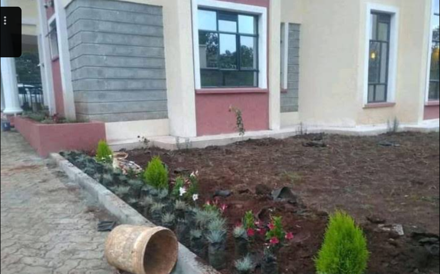
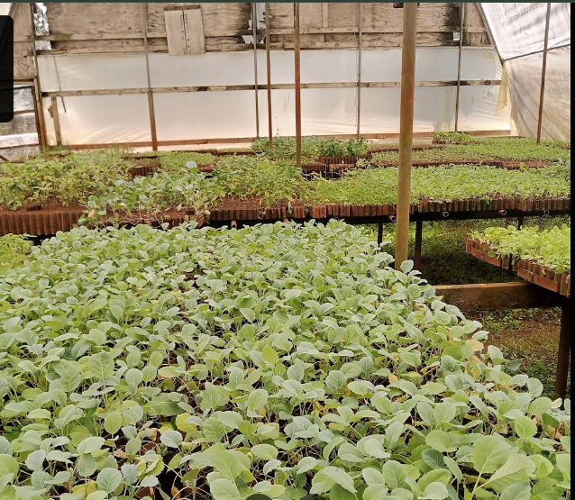
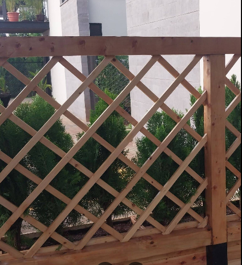
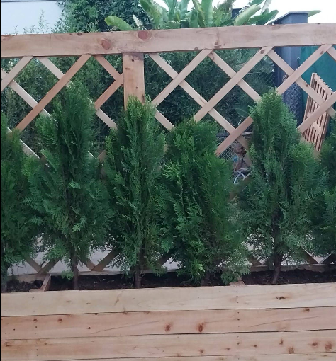
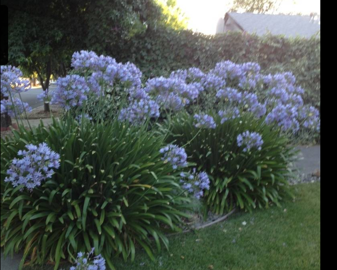
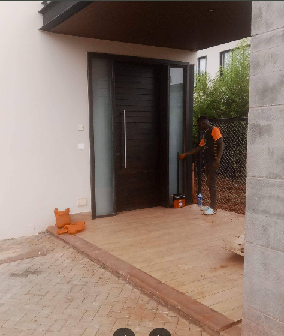
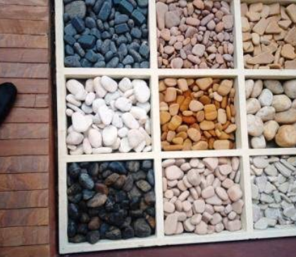
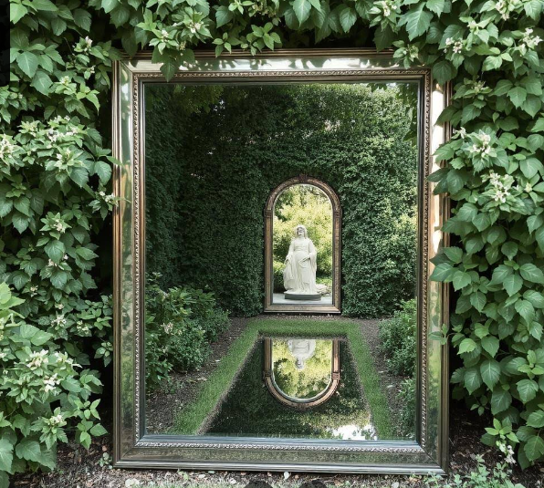
How it works
Share the location, rough size, current condition, and the result you want.
Get practical recommendations for the plants, materials, and care level that fit the space.
The team sources, delivers, plants, shapes, and finishes the garden details.
Keep the garden clean, healthy, and looking intentional after the first installation.
Get a quote
Send a focused project brief by WhatsApp. Include the service type, location, timeline, and a few notes so the team can respond with the right next step.